Key Information:
- Album: The Prince & The Duke
- Release Date: September 8, 2017
- Writers: Luke Dick, Natalie Hemby, Trent Dabbs
- Producer: Luke Dick
- Genre: Indie Rock / Alternative Pop-Rock
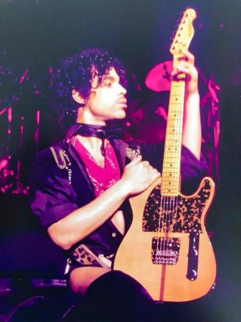
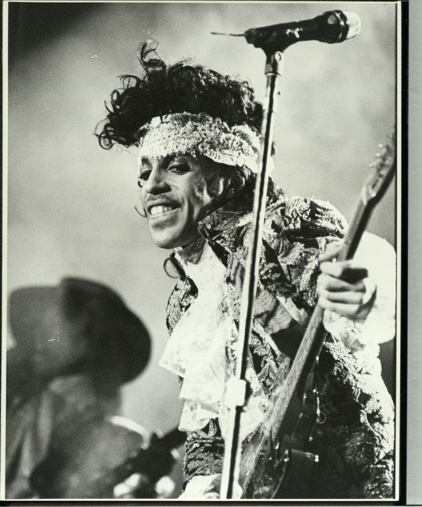
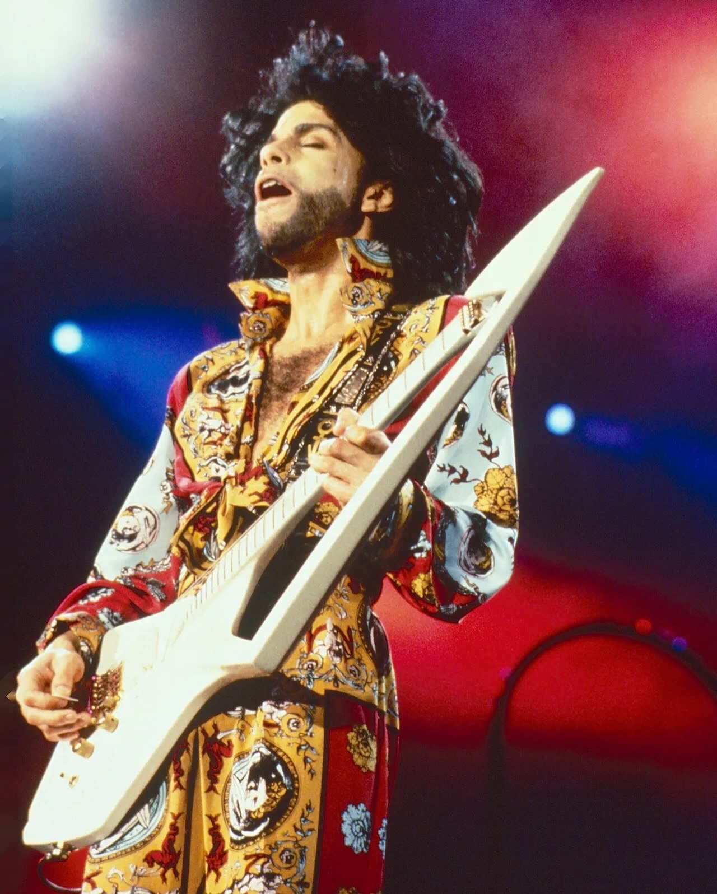
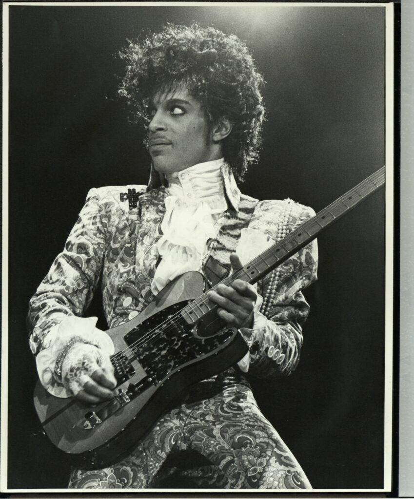
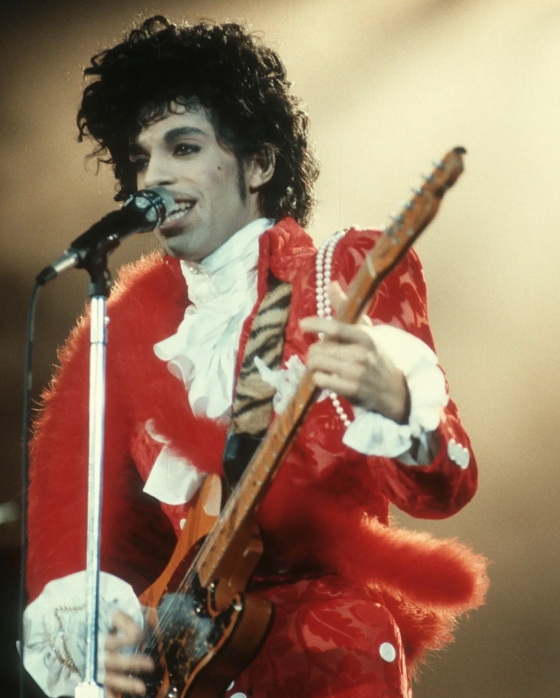
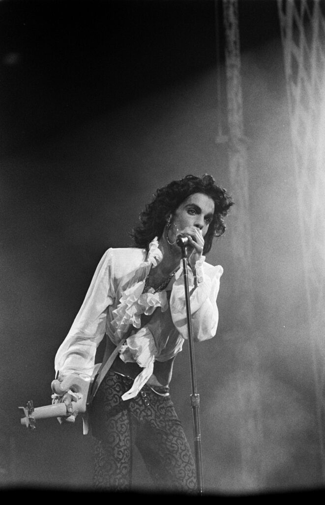
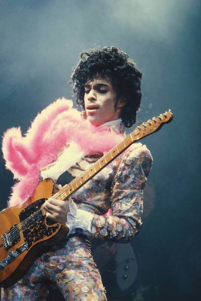
Verse 1
You know I've been a big fan
Wrist band
Brought it last night
I've seen you on the billboard
Yeah your band's pretty tight
I love your little song, lip-sync along
Like an aphrodisiac
You're a top ten baby every time you leave me
I don't know if you're ever coming back
But I
Chorus
I miss you like rain
I miss you like the color purple
Like 1999, little red corvet doing circles
I miss you like let's go crazy
I miss you like kiss
But I don't miss you like I
Don't miss you like I
Don't miss you like I
I don't miss you like I miss Prince
Verse 2
You know how you got your own look
Text book
You don't follow
Livin' in the bright lights
Headlines
Poppin' that collar
Every little game you play
Is just a hit away from a one-hit-wonder
Cashin' in all your fame
Forget my name and losin' my number
Chorus
I miss you like rain
I miss you like the color purple
Like 1999, little red corvet doing circles
I miss you like let's go crazy
I miss you like kiss
But I don't miss you like I
Don't miss you like I
Don't miss you like I
I don't miss you like I miss Prince
Bridge
I don't miss you like I miss Prince
No
I don't miss you like Prince
Chorus
I miss you like rain
I miss you like the color purple
Like 1999, little red corvet doing circles
I miss you like let's go crazy
I miss you like kiss
But I don't miss you like I
Don't miss you like I
Don't miss you like I
I don't miss you like I miss Prince
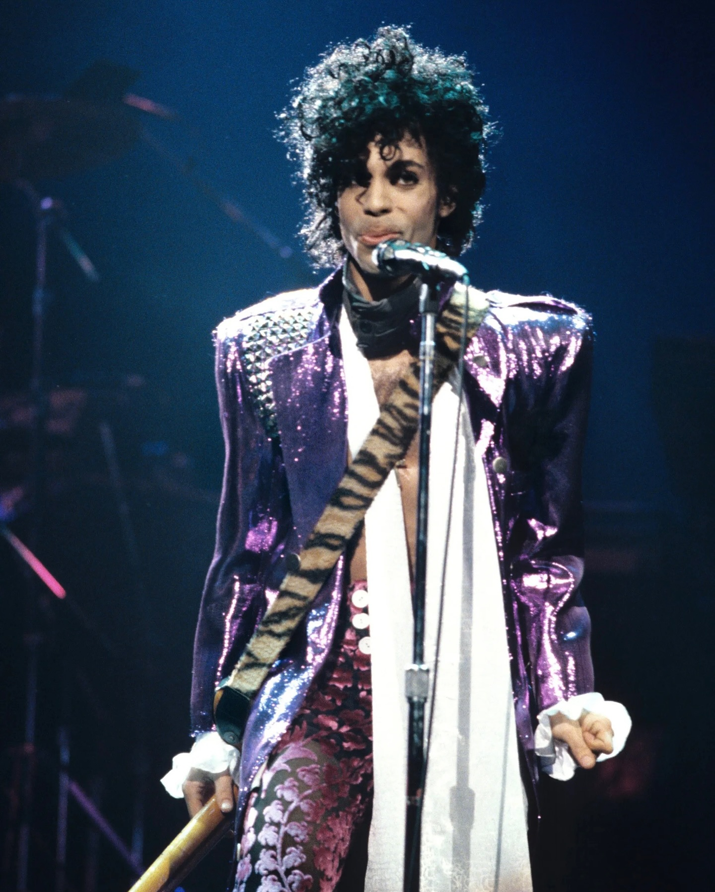
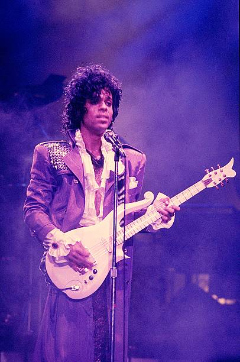
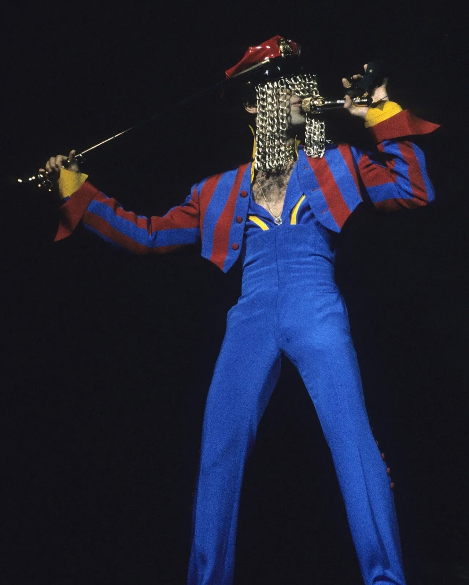
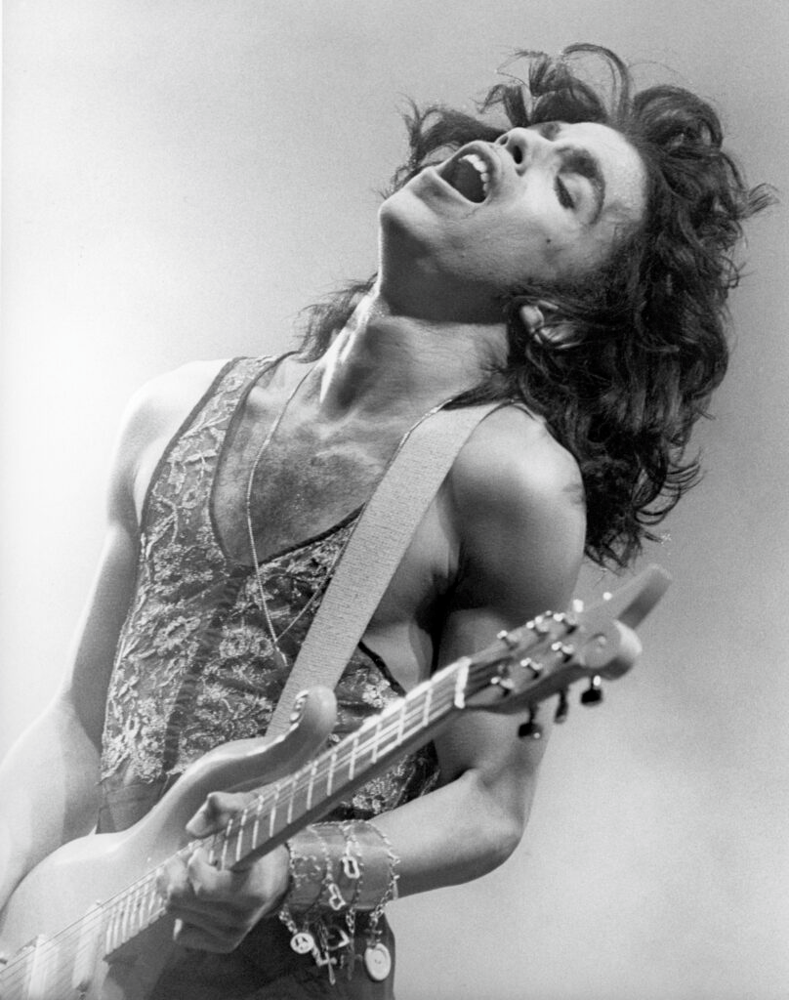
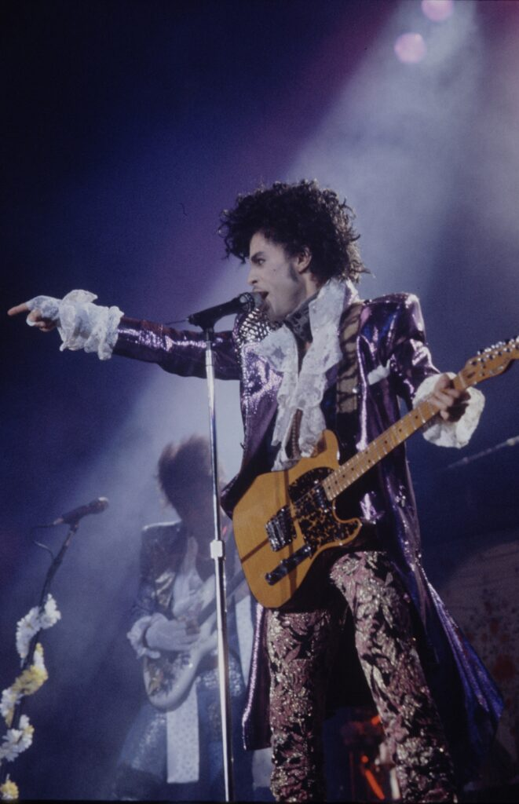
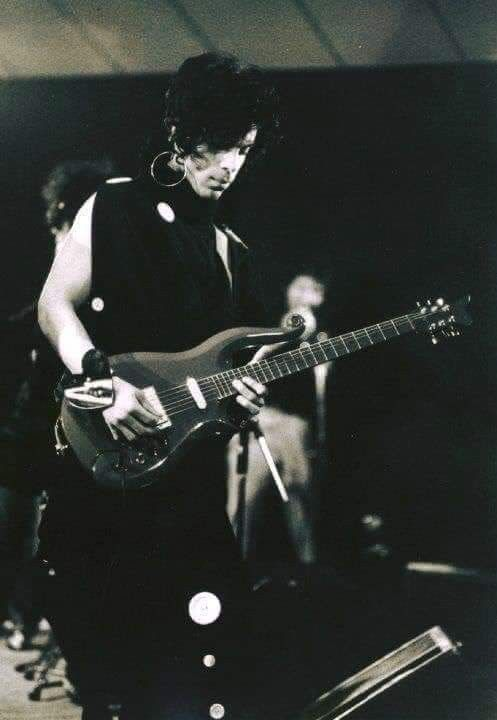
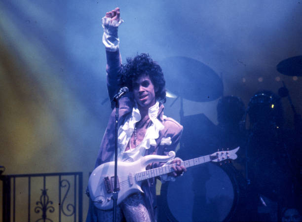